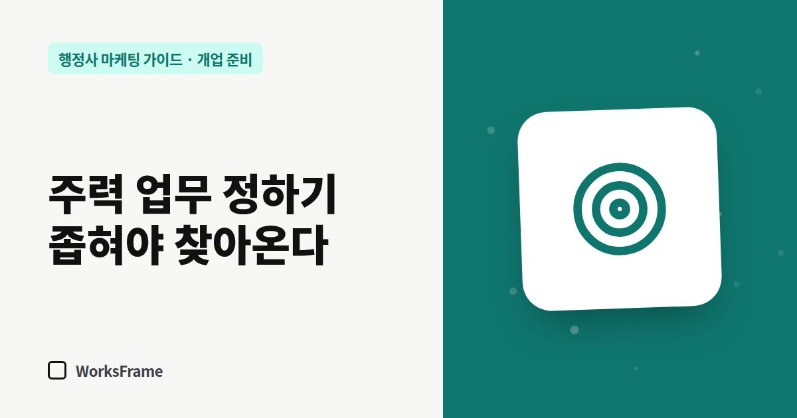

개업 준비
주력 업무 정하기 — 행정사가 “다 합니다”보다 좁혀야 찾아오는 이유
한 줄 답
고객은 ‘행정사’가 아니라 ‘내 상황’으로 검색합니다. 주력 업무를 2~3개로 좁혀 첫 화면과 업무 안내에 크게 보여 줘야 찾아옵니다. 다른 업무를 안 받는다는 뜻은 아닙니다.

행정사는 할 수 있는 업무의 폭이 넓습니다. 그래서 개업 초기에는 “인허가, 출입국, 행정심판, 민원 등 모든 행정업무”라고 쓰기 쉽습니다. 문제는 고객이 그렇게 검색하지 않는다는 점입니다.
고객은 ‘내 상황’으로 검색합니다
고객이 검색창에 넣는 말은 “행정사”보다 이런 문장에 가깝습니다.
- “E-9에서 E-7-4 변경 서류”
- “공장등록 신청 대행”
- “음주 면허취소 구제 절차”
- “농지전용 허가 기간”
업무를 넓게 나열한 사무소보다, 그 상황을 정확히 설명하는 사무소가 검색에도 걸리고 상담에서도 믿음을 얻습니다.
주력 업무 2~3개를 고르는 기준
| 기준 | 질문 |
|---|---|
| 경험 | 이미 해 봤거나, 가장 자신 있는 업무는? |
| 수요 | 내 지역에 이 업무를 찾는 사람이 많은가? |
| 반복성 | 한 번 하고 끝인가, 연장·갱신처럼 다시 오는가? |
| 단가 | 한 건의 수임료가 광고·시간 비용을 감당하는가? |
| 경쟁 | 같은 지역에 이 업무를 크게 내건 사무소가 많은가? |
좁힌다고 다른 일을 안 받는 건 아닙니다
주력 업무는 간판에 크게 쓰는 업무일 뿐입니다. 다른 업무도 받을 수 있고, 홈페이지에 “그 밖의 업무” 메뉴를 두면 됩니다. 다만 첫 화면과 사무소 소개, 플레이스 대표 키워드는 주력 업무 중심으로 채우세요.
주력 업무를 보여 주는 곳
- 홈페이지 첫 화면 — 사무소가 무엇을 하는지 3초 안에 보이게
- 업무 안내 페이지 — 업무마다 대상·요건·서류·절차를 따로 (쓰는 법)
- 네이버 플레이스 소개와 대표 키워드 — 지역 + 업무
- 명함 앞면 — 사무소명 아래 한 줄로
자주 묻는 질문
개업 초기에는 일을 가리기 어려운데 괜찮을까요?
괜찮습니다. 주력 업무를 내세우는 것과 다른 일을 거절하는 것은 다릅니다. 들어오는 문의를 기록해 두면 6개월 뒤 주력 업무를 다시 정할 근거가 됩니다.
주력 업무는 몇 개가 적당한가요?
처음에는 2~3개를 권합니다. 너무 많으면 첫 화면이 다시 “모든 업무”가 됩니다.